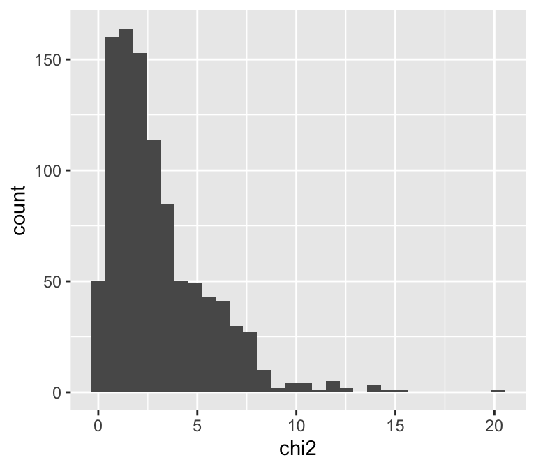
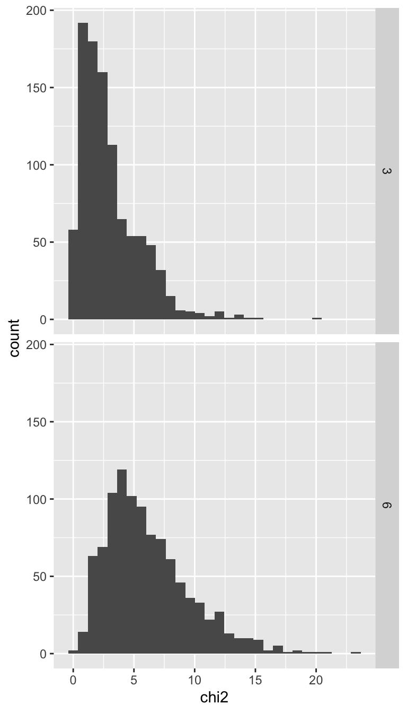

rchisq(10, df = 3) [1] 1.543052 3.867611 1.953355 1.554031 2.846851 1.669662 3.767120 6.781212
[9] 1.599010 1.542909Let’s get familiar with the \(\chi^2\) distribution. We’ll also learn about a new kind of R function, one for generating random samples from any probability distribution. Because we’re focused on the \(\chi^2\) distribution, we’ll use the random sampling function for that distribution: rchisq. We can use rchisq to generate a random sample of any size from a \(\chi^2\) distribution with any degrees of freedom:
rchisq(10, df = 3) [1] 1.543052 3.867611 1.953355 1.554031 2.846851 1.669662 3.767120 6.781212
[9] 1.599010 1.542909The above is a random sample of 10 numbers from the \(\chi^2\) distribution with 3 degrees of freedom.
We can take a larger sample, put it in a data.frame, and make a histogram to see approximately what the \(\chi^2\) distribution with 3 degrees of freedom looks like:
# generate the sample
chi2_df3 <- rchisq(1000, df = 3)
# put it in a data.frame
samp <- data.frame(chi2 = chi2_df3)
# plot it
library(ggplot2)
ggplot(samp, aes(x = chi2)) +
geom_histogram()
Cool! Let’s keep building on this and visualize the histograms of both df = 3 and df = 6. We can do this by adding to our samp data.frame, both extra rows for a random sample with df = 6 and also a column to keep track of the degrees of freedom.
# first add a column for degrees of freedom
samp$df <- 3
# now make a new data.frame for df = 6 (next we'll combine the data.frames)
chi2_df6 <- rchisq(1000, df = 6)
samp_df6 <- data.frame(chi2 = chi2_df6, df = 6)
# now add that new data.frame onto `samp`
samp <- rbind(samp, samp_df6)# visualize the results
View(samp)Now we can make a faceted histogram to see how degrees of freedom impacts the shape of the \(\chi^2\) distribution
ggplot(samp, aes(x = chi2)) +
geom_histogram() +
facet_grid(rows = vars(df))
As we expected, the bigger the degrees of freedom, the more the distribution shifts to the right.
Let’s also calculate some probabilities from these random samples. Let’s calculate the probability of observing a \(\chi^2\) test statistic of 7.8 or greater given 3 degrees of freedom
# recall probability is just the proportion of times an event happens
n_event <- sum(chi2_df3 >= 7.8)
n_event / length(chi2_df3)[1] 0.05So the probability \(Pr(\chi^2 \ge 7.8 | df = 3) \approx\) 0.05. We are working with random samples here, so your numbers will likely be a little different. If \(Pr(\chi^2 \ge 7.8 | df = 3) \approx\) 0.05 seems suspiciously close to 0.05 that’s because I choose 7.8 very deliberately. 7.8 is approximately the critical value for a \(\chi^2\) distribution with 3 degrees of freedom.
Recall that a critical value is the value that cuts a probability distribution at the desired \(\alpha\), AKA significance level. To calculate the critical value we use qchisq:
# this returns the value that divides a chi-sqrd distribution
# into 95% to the left, 5% to the right
qchisq(0.95, df = 3)[1] 7.814728# this does the same
qchisq(0.05, df = 3, lower.tail = FALSE)[1] 7.814728Here’s a question: does the representation of different ethnicities in the faculty at the University of Hawaiʻi look like the ethnic composition of Hawaiʻi as a whole? If not, then something funny might be going on like racist hiring practices, or systemic racism leading to discrepancies in higher education leading to different proportions of qualifications (e.g. holding a graduate degree) across ethnicities.
There can also be reasonable causes for differential ethnic representation, such as if UH wants to have thriving Asian Studies or Black/African Studies or Hawaiian Studies program, we will need to hire qualified faculty for those positions who will likely come from those ethnic backgrounds more often than not.
It should be noted that discrepancies in ethnic group representation in skilled labor jobs is sometimes used to claim there are “biological” differences between ethnic groups in terms of intelligence. This is false. A great read on this topic is Superior by Angela Saini. I wish I could say that “historically there were claims about ‘biological’ differences…” but these claims persist all too readily into our modern times.
So let’s get to it!
Here are the data on ethnicities in Hawaiʻi and counts of different ethnic groups who sit on our faculty at UH:
| ethnicity | state_pop_proportion | number_uh_faculty |
|---|---|---|
| American Indian and Alaska Native | 0.016 | 41 |
| Black or African American | 0.025 | 63 |
| Chinese | 0.100 | 349 |
| Filipino | 0.178 | 247 |
| Japanese | 0.162 | 544 |
| Korean | 0.024 | 135 |
| Native Hawaiian | 0.152 | 453 |
| Other Pacific Islander | 0.030 | 42 |
| Vietnamese | 0.007 | 18 |
| White | 0.306 | 1670 |
Demographic data for Hawaiʻi come from the state government report “Demographic, Social, Economic, and Housing Characteristics for Selected Race Groups in Hawaii” and the data for faculty by ethnic group come from the UH Mānoa Institutional Research Office. Because those two reporting bodies divide ethnicities slightly differently or do not report on others I had to leave some groups out entirely (e.g. Indian, not reported by the state government).
These data are in your data folder in Koa and are called uh_faculty_ethnicity.csv
How would we use a \(\chi^2\) goodness of fit test for these data? We’re going to leave that to you to answer in the Questions section. Here, we’ll look at a simpler example. First let’s make-up that example. Suppose we have data on 4 groups A, B, C, D, and their expected proportions. We can make such a data set like this:
fake_data <- data.frame(group = c("A", "B", "C", "D"),
prop = c(0.15, 0.5, 0.05, 0.3),
count = c(15, 17, 10, 8))
# have a look
fake_data group prop count
1 A 0.15 15
2 B 0.50 17
3 C 0.05 10
4 D 0.30 8Now we can walk through the steps of calculating a \(\chi^2\) statistic and comparing it to the null distribution.
First we need the expected counts
# just the expected proportion times total number of observations
fake_data$expected <- fake_data$prop * sum(fake_data$count)
fake_data group prop count expected
1 A 0.15 15 7.5
2 B 0.50 17 25.0
3 C 0.05 10 2.5
4 D 0.30 8 15.0We can see that we’re not violating the assumptions of the \(\chi^2\) distribution so let’s calculate the \(\chi^2\) test statistic:
chi2stat <- sum((fake_data$count - fake_data$expected)^2 /
fake_data$expected)We’re dealing with frequency data, and doing a lab about \(\chi^2\) distributions, so our null distribution is a \(\chi^2\) distribution, but with what degrees of freedom? There are 4 groups, so df = 3.
pchisq(chi2stat, df = 3, lower.tail = FALSE)[1] 8.147653e-08That’s a tiny \(P\)-value, so yes, we reject the null at an \(\alpha = 0.05\) level.
Contingency analysis is very similar to a \(\chi^2\) goodness of fit test, but in contingency analysis we have 2 categorical variables. We still compare the observed frequencies with the expected using a \(\chi^2\) test statistic, and we still use a \(\chi^2\) distribution for the null distribution.
Our question is often a little different: with contingency analysis we are often asking, is there an association between these two categorical variables?
For example, do manu o Kū prefer nesting in certain types of trees? Manu o Kū are the friendly (yes I am anthropomorphizing) little white terns that fly around campus. A few years back, students went out and looked in random trees to see if the manu o Kū were nesting in the trees. Do the manu prefer a certain species? Here the two categorical variables are tree species and yes/no is there a nest. Here is a peek at the data
| tree | nest |
|---|---|
| Albizia | no |
| Kukui | no |
| Cassia | no |
| Kukui | no |
| Albizia | no |
| Cassia | yes |
That is just the first few rows, there are 183 rows in total. How do we do a \(\chi^2\) contingency analysis with these kind of data? Again, let’s get there using a simpler fake dataset
fake_2var <- data.frame(group1 = sample(c("A", "B"), 25, replace = TRUE),
yes_no = sample(c("yes", "no"), 25, replace = TRUE))
fake_2var group1 yes_no
1 A no
2 B no
3 A yes
4 A no
5 B no
6 B no
7 A no
8 A no
9 A no
10 A no
11 B yes
12 A yes
13 A no
14 B no
15 B yes
16 B no
17 B no
18 A yes
19 B no
20 A no
21 A yes
22 B yes
23 B yes
24 B yes
25 B yesWe will use the chisq.test function for the contingency analysis rather than calculate everything by hand. The function chisq.test can be used in one of two ways.
First, we can calculate the contingency table from the data and pass that table to chisq.test:
# calculate the contingency table
fake_tab <- table(fake_2var)
# have a look, remember this is random so yours may be different
fake_tab yes_no
group1 no yes
A 8 4
B 7 6Now we can pass this to chisq.test
chisq.test(fake_tab)Warning in chisq.test(fake_tab): Chi-squared approximation may be incorrect
Pearson's Chi-squared test with Yates' continuity correction
data: fake_tab
X-squared = 0.060096, df = 1, p-value = 0.8063Notice, we are again getting a warning that the assumptions of the \(\chi^2\) test might not be met. That’s ok, this is just an example.
The other way we can use the chisq.test function is by directly passing it the categorical variables
chisq.test(fake_2var$group1, fake_2var$yes_no)Warning in chisq.test(fake_2var$group1, fake_2var$yes_no): Chi-squared
approximation may be incorrect
Pearson's Chi-squared test with Yates' continuity correction
data: fake_2var$group1 and fake_2var$yes_no
X-squared = 0.060096, df = 1, p-value = 0.8063That really couldn’t be simpler! Under the hood, chisq.test is calculating the contingency table for us.
We might as well touch on what to do in real life if you get the warning about the \(\chi^2\) test assumptions not being met. You can instead use a test called “Fisher’s exact test.” This approach is more computationally intensive than the \(\chi^2\) test, so back in the day people didn’t like doing it, but now there’s really no harm. The code is the same too, just swap out the function name:
fisher.test(fake_2var$group1, fake_2var$yes_no)
Fisher's Exact Test for Count Data
data: fake_2var$group1 and fake_2var$yes_no
p-value = 0.6882
alternative hypothesis: true odds ratio is not equal to 1
95 percent confidence interval:
0.2610602 11.8938828
sample estimates:
odds ratio
1.677387 You can see it tells us some extra stuff, but our primary concern for now is the \(P\)-value, which is still very non-significant.
Keep building on the code you ran to make samp. Add another random sample of 1000 numbers, but this time from a \(\chi^2\) distribution with 9 degrees of freedom.
Make a faceted histogram with all three distributions captured in samp.
Calculate the critical value for \(\alpha = 0.05\) for the \(\chi^2\) distribution with 9 degrees of freedom
Use R code to estimate the probability from your random sample from the \(\chi^2\) distribution with 9 degrees of freedom of values greater than or equal to the critical value you just calculated
Following the steps we used to do a \(\chi^2\) goodness of fit test for fake_data, preform a \(\chi^2\) goodness of fit test to answer the question of whether the ethnic composition of UH faculty resembles the ethnic composition of Hawaiʻi. What do you conclude?
Following the steps we used to do a contingency analysis for fake_2var, preform a contingency analysis for the manu o Kū nesting data. Do the manu have a preference for which type of tree to nest in, or do they seem to choose at random? The manu o Kū data are in your data folder and called manuoku.csv.